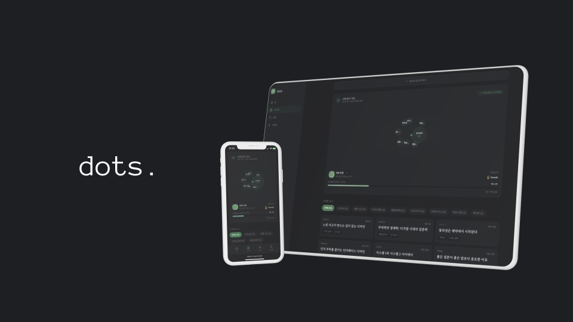

dots
흩어진 정보를 한 곳에서. RSS의 구조, 디자인의 감각.
Figma Make, Claude Code, Vercel을 활용해 아이디어를 72시간 만에 작동하는 서비스로 만든 AI-native 빌드 경험.
Live ↗
개요
흩어진 정보를 한 곳에서. RSS의 구조, 사용성과 심미성을 부여하고자 시작한 프로젝트
Solo Project
1인 + AI tools
✅ 기여도 100%
Period
2026.02
Tools
Figma Make
Claude Code
Github
Vercel
Supabase
정보 과부하 시대, 사람들은 지쳐있다
뉴스레터, 블로그, 소셜미디어, 유튜브 — 매일 이곳저곳을 전전하며 정보를 수집하는 것 자체가 피로다. RSS는 답이 될 수 있었지만, 2024년의 사용자에게 RSS 리더는 너무 기술적이고 너무 못생겼다.
dots는 이 질문에서 출발했다: "RSS의 구조를 가지되, 사람들이 실제로 쓰고 싶은 인터페이스라면?"
혼자, 빠르게, 작동하는 것을 만들어야 했다
Figma Make → Claude Code → Vercel, 72시간 빌드 루프
아이디어가 생기면 바로 Figma Make로 UI 초안을 시각화했다. 목업이 아닌 실제 인터랙션을 전제로 그렸다. 완성된 컴포넌트를 Claude Code에 붙여넣어 HTML/CSS/JS 코드로 변환하고, 즉시 Vercel로 배포해 실제 URL에서 확인했다.
핵심 원칙
"피드백을 파일이 아닌 URL로 받는다."
Figma 링크 대신 실제 서비스 URL을 공유하면 피드백의 질이 달라진다. 어떤 버튼이 눌리는지, 어떤 텍스트에서 멈추는지가 보인다.
Figma Make — 아이디어를 프롬프트로 UI 초안 시각화 (목업이 아닌 인터랙션 전제)
Claude Code — 완성된 컴포넌트를 HTML/CSS/JS로 변환
Vercel — 즉시 배포 후 실제 URL에서 피드백 수집
백엔드를 미루고 UX 검증에 집중
초기엔 실제 RSS 피드 파싱 + 알림 발송 기능까지 구현하려 했다.
트레이드오프
백엔드 구현 2주 vs. UI/UX 검증 3일
결론: 백엔드를 미루고 정적 데이터로 UI 흐름을 먼저 검증했다. 핵심 질문은 "기능이 동작하는가"가 아니라 "이 인터페이스가 쓰고 싶은가"였기 때문이다.
이 판단 덕분에 72시간 안에 실제 URL을 만들고, 첫 피드백을 받을 수 있었다.
아이디어가 URL이 됐다
Figma Make → Claude Code → Vercel 전 과정을 1인이 72시간 내 완료
dots2-2.vercel.app — 실제 배포된 서비스 URL
RSS 실제 파싱 + 알림 기능 구현 (백엔드 연동 예정)
디자이너가 배포까지 한다는 것의 의미
dots를 만들면서 확인한 것: 디자이너가 직접 코드를 배포하면 판단의 속도가 달라진다. Figma 파일에서 "이게 맞나?"를 고민하는 대신, URL을 열고 직접 눌러보면 된다.
AI 툴은 이 속도를 가능하게 한 인프라였다. Figma Make는 아이디어를 컴포넌트로, Claude Code는 컴포넌트를 코드로, Vercel은 코드를 서비스로 만들었다.